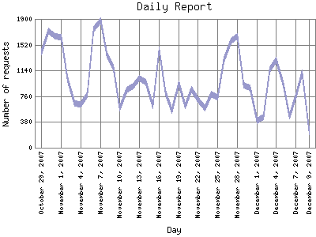

Analog 5.24
Analog 5.24 Report Magic for Analog 2.13
Report Magic for Analog 2.13The Daily Report identifies the activity for each day within the reporting period. Remember that one page hit can result in several server requests as the images for each page are loaded.

| Day | Number of requests | Percentage of the requests | |
|---|---|---|---|
| 1. | December 9, 2007 | 237 | 0.7% |
| 2. | December 8, 2007 | 1,108 | 0.30% |
| 3. | December 7, 2007 | 763 | 0.20% |
| 4. | December 6, 2007 | 469 | 0.12% |
| 5. | December 5, 2007 | 943 | 0.24% |
| 6. | December 4, 2007 | 1,290 | 0.34% |
| 7. | December 3, 2007 | 1,156 | 0.30% |
| 8. | December 2, 2007 | 449 | 0.11% |
| 9. | December 1, 2007 | 399 | 0.10% |
| 10. | November 30, 2007 | 887 | 0.23% |
| 11. | November 29, 2007 | 925 | 0.24% |
| 12. | November 28, 2007 | 1,639 | 0.43% |
| 13. | November 27, 2007 | 1,577 | 0.41% |
| 14. | November 26, 2007 | 1,291 | 0.34% |
| 15. | November 25, 2007 | 748 | 0.20% |
| 16. | November 24, 2007 | 795 | 0.21% |
| 17. | November 23, 2007 | 583 | 0.16% |
| 18. | November 22, 2007 | 708 | 0.19% |
| 19. | November 21, 2007 | 860 | 0.22% |
| 20. | November 20, 2007 | 613 | 0.17% |
| 21. | November 19, 2007 | 950 | 0.26% |
| 22. | November 18, 2007 | 545 | 0.14% |
| 23. | November 17, 2007 | 815 | 0.21% |
| 24. | November 16, 2007 | 1,444 | 0.39% |
| 25. | November 15, 2007 | 613 | 0.17% |
| 26. | November 14, 2007 | 962 | 0.26% |
| 27. | November 13, 2007 | 1,023 | 0.28% |
| 28. | November 12, 2007 | 913 | 0.24% |
| 29. | November 11, 2007 | 849 | 0.22% |
| 30. | November 10, 2007 | 584 | 0.16% |
| 31. | November 9, 2007 | 1,193 | 0.31% |
| 32. | November 8, 2007 | 1,368 | 0.37% |
| 33. | November 7, 2007 | 1,871 | 0.50% |
| 34. | November 6, 2007 | 1,749 | 0.47% |
| 35. | November 5, 2007 | 783 | 0.20% |
| 36. | November 4, 2007 | 636 | 0.17% |
| 37. | November 3, 2007 | 652 | 0.18% |
| 38. | November 2, 2007 | 1,014 | 0.27% |
| 39. | November 1, 2007 | 1,633 | 0.43% |
| 40. | October 31, 2007 | 1,638 | 0.43% |
| 41. | October 30, 2007 | 1,729 | 0.46% |
| 42. | October 29, 2007 | 1,405 | 0.38% |
Most active day September 13, 2007 : 34,959 requests handled.
Daily average: 995 requests handled.
This report was generated on December 9, 2007 02:23.
Report time frame September 9, 2007 05:00 to December 9, 2007 05:55.
| Web statistics report produced by: | |
| Analog 5.24 | Report Magic for Analog 2.13 |